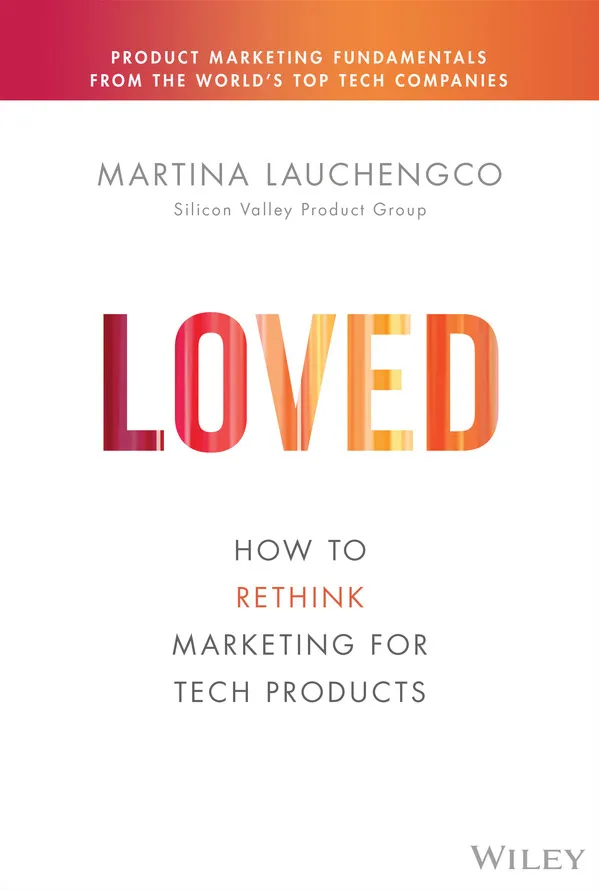
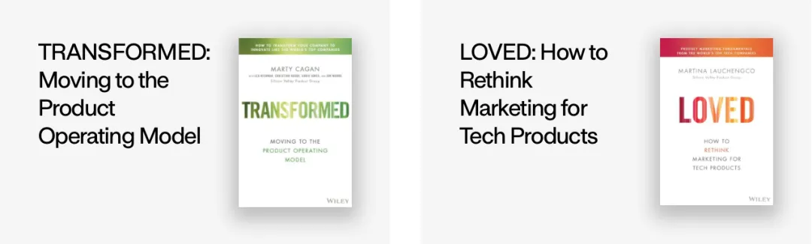
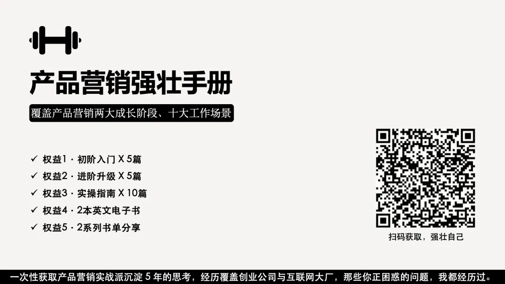
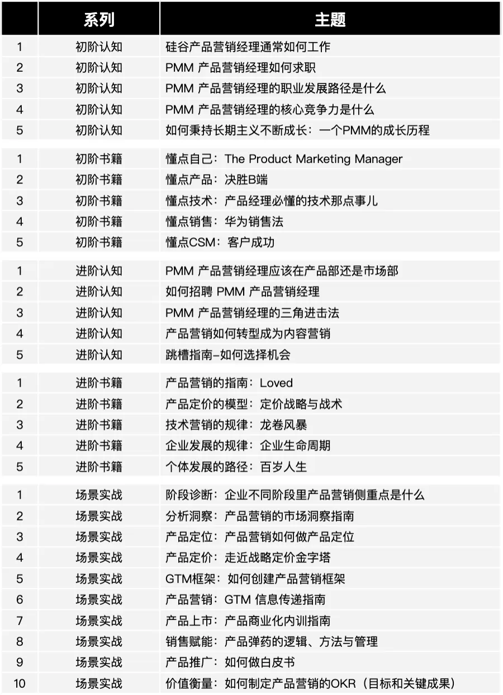

前些年在创业公司的时候，工作上缺少有经验的产品营销的带领，只能自己摸索。然后在广泛阅读的过程中，我逐步意识到，国内的 B2B 产品营销方式，距离国外还有很大的差距，既不规范，也没有形成广泛共识。可能一部分大厂和外企内部有较为完整的方法论框架，但是这些咱从外部也不太能获取到。
因此我决定将视野放向海外成熟市场，学习成熟的实践经验。同时尽量在有限的条件下，发挥自己的想象力，做点行之有效的事儿。

在此过程中，我阅读了LOVED 这本书，SVPG 这家机构这几年陆续出了4本关于如何让产品走向成功的书，如下所示，不过我只读了 LOVED 这一本。

LOVED 是继 The Product Marketing Maneger 之后，又一本我觉得不错的产品营销英文指南。不同于我们常常看到的产品营销角色定位的基础信息，这本书还对如何重新思考并做好技术产品营销做了系统性的阐述。作者认为关键在于——明确期望，并定义好一个流程，让所有团队将“Release”分类在一起并采取相应的敏捷行动。
书中也有诸多给技术产品营销从业者的实操建议，比如这本书里同样提到了跨越鸿沟的概念，也分享了如何做产品差异化定位，撬动科技品牌的杠杆等。对于技术产品营销领域的我来说，有启发之处还包含如下4点：
道：重视品牌的力量
品牌是获得战略优势的工具，它贯穿在数量惊人的各种小事情之中。虽然很多人会觉得品牌管理超出了产品营销的范畴，但在某些情况下，品牌也确实应该存在并作用于产品，例如产品/功能命名、多产品套件、业务品牌线等多种场景。尤其是在产品同质化的市场中，品牌影响力是看不见的手。
法：推动敏捷的营销实践
产品敏捷迭代的原则，也可以应用于产品营销之中，用一种更加动态的方法，快速响应市场变化，让产品营销流程变得更加灵活。例如产品营销可以使用 Scrum 的方式，每周讨论营销活动，确定各类事项的优先级，讨论如何改进，同时确保有最新的市场信息能为每次冲刺提供有力支撑。
术：分享更多真实故事
栩栩如生的故事不仅对营销作用强大，在为内部团队做价值信息传递的时候，也有利于带来更广泛的传播，激发新的想法。不要把所有东西都卷成数据事实，而是讲述真实人物、做真实事情的故事，以及产品所产生的真实影响。这一点其实会打破我们的惯性，因为 B2B 营销似乎有一个宗旨就是所有的最佳实践、案例故事都需要有可量化的价值描述，但其实一句有温度的客户原声、合作过程的生动故事更是引起共情的好方式。
器：用好产品上市画布
如果能够将客户、市场营销、销售和产品规划等多方联系起来，在各种规模的组织中都具有非常大的价值，但这也意味着需要打破诸多信息不对称，因此书中建议使用统一的产品上市画布，我觉得可以也理解为产品路标/产品路线图，它能让产品发布信息在市场团队、销售团队和产品团队之间保持一致。
可惜这本书还没有翻译为中文，看过的人不多。但我非常推荐大家将视野放向海外，看看海外技术产品营销都是怎么做的。
经过这几年，我觉得若要做好产品营销，构建自己的知识框架，大概有三步：第一步是精准学习，第二步是交叉范畴，那么第三步便是向海外去。为了让信息流动，最近我在小报童开启了专栏《产品营销强壮手册》，分享我在实践与学习中的思考笔记。
如果大家对于我的成长历程，以及如何构建产品营销知识框架感兴趣，欢迎收看《产品营销强壮手册》👇 付费读者还可以获取 LOVED 和 The Product Marketing Maneger 这两本英文原版书的 PDF 哦！

- ↑扫码打开专栏↑，点击页面底部的订阅。
- 订阅后，记得关注“小报童”的公众号，内容更新会有提醒。
- 每周你可选一个时间点，接收本周小报童中更新的文章，甚至也可以选择更古典的方式：邮箱接收。
主题预览

怎么付费？
- 付费模式：买断制
- 当前价格：99元（未来将不定期动态涨价）